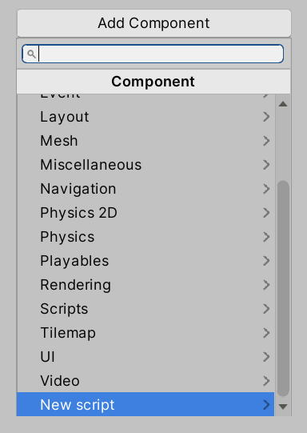
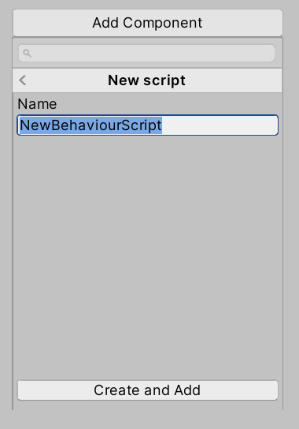
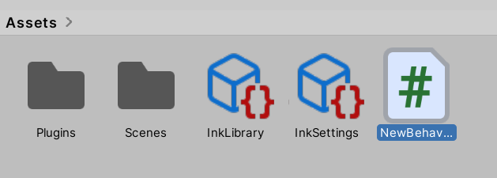
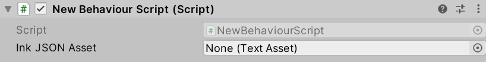
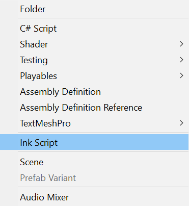
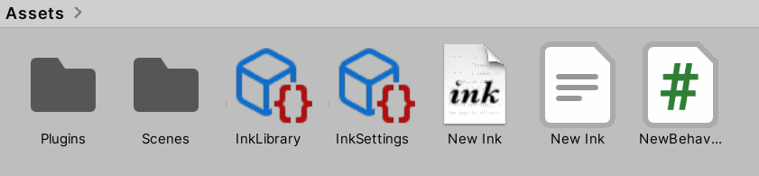
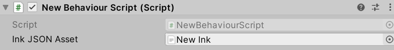
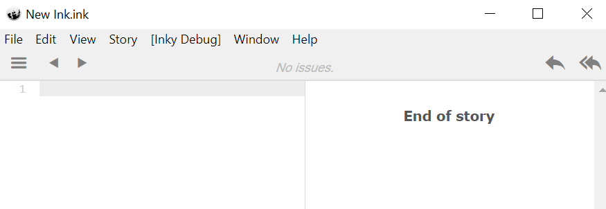
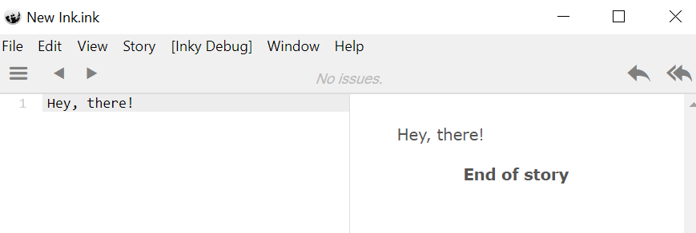
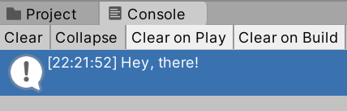

Chapter 8: Ink: Loading Ink-Unity Plugin
Objectives
- Install the Ink Unity Integration package using the Unity Package Manager
- Evaluate different installation methods (UPM, manifest.json, OpenUPM, .unitypackage)
- Import Ink demo scenes and samples
- Create a basic scripting component for testing Ink integration
- Utilize the Ink Compiler and Runtime in Unity projects
Table of Contents
Accessing and Importing Ink Unity Integration
Open Unity Hub and create a new project. (This project is for testing purposes. Its name can be whatever is most convenient including the default “New Unity Project”.)
Note: As of 2025, the recommended way to install Ink Unity Integration is through the Unity Package Manager (UPM) rather than the Asset Store. The Asset Store version is updated rarely and is not recommended.
Installing via Package Manager (Recommended)
The easiest and most up-to-date method is to install Ink Unity Integration as a UPM package:
- In Unity, go to Window → Package Manager
- Click the + button in the upper-left corner
- Select Add package from git URL…
- Enter:
https://github.com/inkle/ink-unity-integration.git#upm - Click Add
Unity will download and install the package. Once complete, the Ink Compiler, Runtime, and Examples will be available in your project.
Alternative Installation Methods:
- Manual manifest.json: Add
"com.inkle.ink-unity-integration": "https://github.com/inkle/ink-unity-integration.git#upm"to your project’sPackages/manifest.jsonfile- OpenUPM: Visit openupm.com for OpenUPM installation instructions
- .unitypackage: Download from GitHub releases if you need to modify the source code
Importing Demo Scenes
When installed via UPM, demo projects can be imported separately:
- In the Package Manager window, select Ink Unity Integration
- Expand the Samples section
- Click Import next to the demo you want to use
Once loaded, the Ink Compiler, Runtime, and Example scenes will be added to your Assets folder.
Creating Example Scripting Component
In the Hierarchy Window, click on the Main Camera GameObject. This will show its components in the Inspector Window.
Note: In the default layout, the Hierarchy Window will be on the far left and the Inspector Window on the far right.

In the Inspector Window, click on “Add Component” and scroll to “Add Script”.

Click on “Add Script” and then the “Create and Add Script” button.
Note: Normally, the default name of “NewBehaviorScript” would be changed. However, as this is an example, that step is being skipped.

Whenever a new scripting component is added, its C# file is added to the Assets folder. With the Ink Unity Integration plugin installed, it will be the newest file.
Double-click this file to open it in your code editor.
Note: As of 2025, Unity supports multiple IDEs including Visual Studio, Visual Studio Code, and JetBrains Rider. Your default editor can be set in Edit → Preferences → External Tools (Windows/Linux) or Unity → Settings → External Tools (macOS).
using System.Collections;
using System.Collections.Generic;
using UnityEngine;
public class NewBehaviourScript : MonoBehaviour
{
// Start is called before the first frame update
void Start()
{
}
// Update is called once per frame
void Update()
{
}
}
As reviewed in Chapter 6 on Scripting Basics, a new behavior script will have two methods: Start() and Update(). The method Start() will be called before the first rendered frame and the method Update() will be called every frame.
In order to use Ink and its Runtime classes, it needs to be added to the file.
using System.Collections;
using System.Collections.Generic;
using UnityEngine;
// Add the Ink Runtime
using Ink.Runtime;
public class NewBehaviourScript : MonoBehaviour
{
// Start is called before the first frame update
void Start()
{
}
// Update is called once per frame
void Update()
{
}
}
Loading a Compiled Ink File
Ink runs compiled files created by Inky or the Ink compiler now added to the project. However, before it can run a file, there needs to be a property added to the file so that it can be used in the Unity Editor.
Reminder: All serialized fields (public properties or fields marked with
[SerializeField]) added to a script file can be accessed and their values changed in the Unity Editor.
using System.Collections;
using System.Collections.Generic;
using UnityEngine;
// Add the Ink Runtime
using Ink.Runtime;
public class NewBehaviourScript : MonoBehaviour
{
// Add a TextAsset representing the compiled Ink Asset
public TextAsset InkJSONAsset;
// Start is called before the first frame update
void Start()
{
}
// Update is called once per frame
void Update()
{
}
}
Adding the property InkJSONAsset of type TextAsset helps in connecting the text asset from the Project window with the property during the Initialization step of the order of execution for the GameObject.

With the Ink Unity Integration plugin loaded, any .ink files added to the project will be automatically compiled into .json files. The context menu for the Project window also now has a “Ink Script” option for creating Ink files quickly.

To create a Ink Script file using this functionality, use the Add or right-click menu and then click on “Ink Script”.

A new file named New Ink.ink will be created. After clicking outside of the name, the built-in Ink compiler will automatically produce a new file New Ink.json. It is this file that should be associated with the behavior script.

With Main Camera selected in the Hierarchy window (so that its components appear in the Inspector window), drag and drop the new New Ink.json file on the “Ink JSON Asset” property.
With the New Ink.json file now associated with the scripting component, any saved changes to the New Ink.ink file will result in the JSON file being re-compiled. As it is now associated with the scripting component, its content will always be updated.
Editing the Ink File
Unless otherwise setup, .ink files are not associated with a program for editing. Double-clicking or clicking the “Open” button in the Inspector window will prompt to pick a program to edit the file.
It is strongly recommended to use the Inky editor for editing .ink files. Inky is available for Windows, macOS, and Linux. However, any plain text editor (Notepad, Visual Studio Code, Sublime Text, etc.) can be used.
Note: This chapter will use screenshots from Inky. As of 2025, Inky continues to be the recommended editor for
.inkfiles, with features like live preview, syntax highlighting, and issue detection.

New Ink.ink:
Hey, there!

Adding the text Hey, there! in the left-hand side of Inky will show the compiled results on the right-hand side.
Once added, save the file through using Ctrl-S or using File -> Save.
Returning to Unity will trigger the Project window to check for any changes in any existing Ink files. If they have changed, the built-in Ink compiler will re-compile and produce an updated JSON file.
Reminder: Because the JSON file is associated with “Ink JSON Asset” property, it was also always be updated when the scene runs.
Setting up Story API
With the Ink and compiled JSON setup, the compiled file will be used when the scene starts. However, even with the compiled file associated, one more step is needed. A Story object is needed.
using System.Collections;
using System.Collections.Generic;
using UnityEngine;
// Add the Ink Runtime
using Ink.Runtime;
public class NewBehaviourScript : MonoBehaviour
{
// Add a TextAsset representing the compiled Ink Asset
public TextAsset InkJSONAsset;
// Start is called before the first frame update
void Start()
{
Story exampleStory = new Story(InkJSONAsset.text);
Debug.Log(exampleStory.Continue());
}
// Update is called once per frame
void Update()
{
}
}
The Story object allows for using the Story API. It exposes methods like Continue() that load parts of the story.
In the above example, a new Story object is created and is passed the InkJSONAsset property that is associated with the New Ink.json via Unity during its Initialization step.
Note: The property text is used from the TextAsset object. This exposes the text content of the associated text asset file.
When run, the code will start with the property during the Initialization order of execution.
Next, the method Start() is called on the GameObject.
A Story object is then created and its constructor method is passed the InkJSONAsset.text property of the InkJSONAsset object.
Finally, inside of the Start() method, Debug.Log() is called with the argument exampleStory.Continue().

As will be covered in the next chapter, the Story API has methods for loading content from a story (compiled JSON file). The method Continue() loads the next chunk in the story. In this example, it will load the current text of the story (Hey, there!) and display it on the Console.